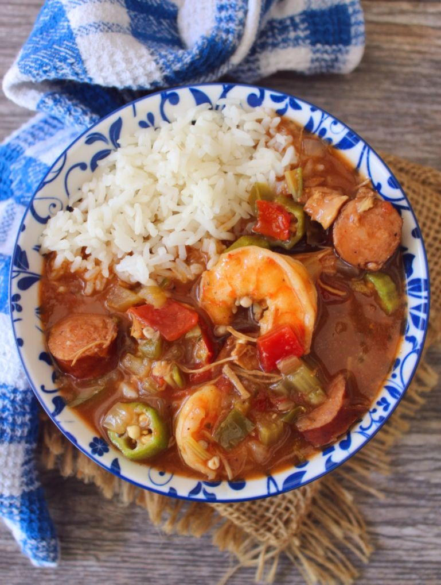

New Orleans Creole Gumbo

What is Gumbo?
Gumbo is one of the most famous dishes to result from Louisiana's shared Creole-Cajun heritage. Gumbo falls somewhere between a thick stew and a hearty soup and can contain ingredients such as chicken, sausage, ham, seafood, okra, tomatoes, and greens.
Boldly delicious New Orleans-style gumbo is surprisingly easy to make at home. You'll find the full recipe below with step-by-step instructions, but here's what you can expect when you make this top-rated recipe
Great gumbo starts with roux, a flavorful thickening agent made from equal parts fat and flour. Once the roux is a deep golden color, add diced veggies and sausage to the mix. Then, incorporate beef bouillon, hot sauce, tomatoes, and seasonings to intensify the flavor.
Let the gumbo simmer for 45 minutes before adding file powder, okra, and seafood. The result will be a lusciously hearty stew packed with Creole spice.
Ingredients
- 1 cup all-purpose flour
- ¾ cup bacon drippings
- 1 cup coarsely chopped celery
- 1 large onion, coarsely chopped
- 1 large green bell pepper, coarselyfi chopped
- 2 cloves garlic, minced
- 1 pound andouille sausage, sliced
- 3 quarts water
- 6 cubes beef bouillon
Steps
- Make the roux: Whisk together flour and 3/4 cup bacon drippings in a large, heavy saucepan over medium-low heat until smooth. Cook roux, whisking constantly, until it turns a rich mahogany brown color. This can take 20 to 30 minutes; watch heat carefully and whisk constantly or roux will burn. Remove from heat; continue whisking until mixture stops cooking.
- Make the gumbo: Place celery, onion, green bell pepper, and garlic into the work bowl of a food processor, and pulse until all vegetables are very finely chopped. Stir vegetables into the roux, and mix in sausage. Bring mixture to a simmer over medium-low heat, and cook until vegetables are tender, 10 to 15 minutes. Remove from heat and set aside.
- Combine water and beef bouillon cubes in a large Dutch oven or soup pot and bring to a boil over medium-high heat. Stir until bouillon cubes dissolve, then whisk roux mixture into the boiling water.
- Reduce heat to a simmer and mix in sugar, salt, hot pepper sauce, Cajun seasoning, bay leaves, thyme, stewed tomatoes, and tomato sauce. Simmer soup over low heat for 1 hour; mix in 2 teaspoons of file gumbo powder at the 45-minute mark.
- Meanwhile, melt 2 tablespoons bacon drippings in a skillet over medium heat. Add okra and vinegar and cook for 15 minutes; remove okra with a slotted spoon, and stir into the simmering gumbo.
- Mix in reserved vegetables, crabmeat, shrimp, and Worcestershire sauce, and simmer until flavors have blended, 45 more minutes. Stir in 2 more teaspoons of file gumbo powder just before serving.